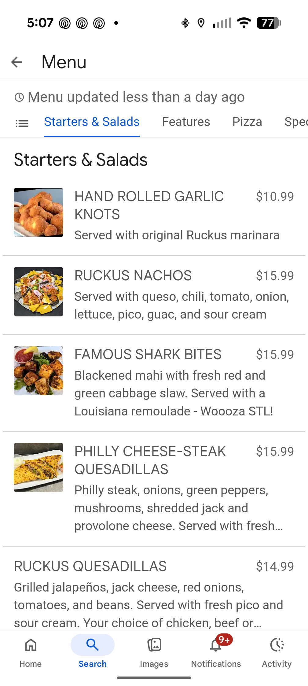
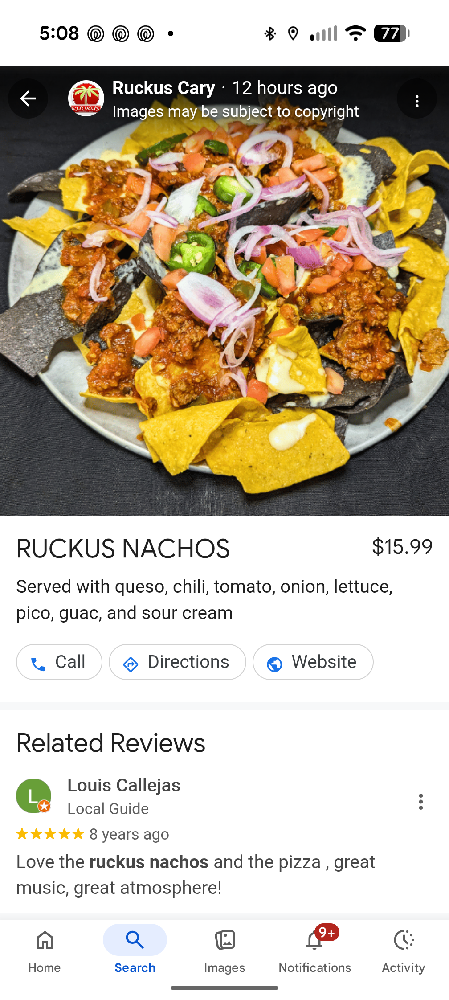
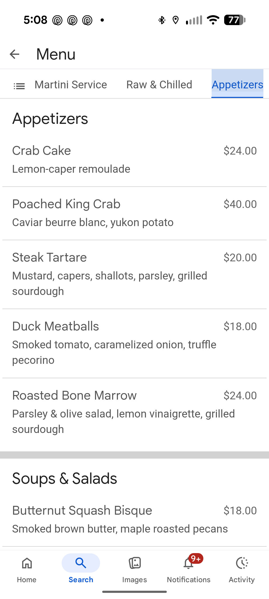

LookBook Menu
Most restaurant menus are invisible to Google at the dish level. LBM turns your menu into structured, discoverable dish data — so guests find your food, not just your address.
Free audit · No contract · No setup fee
The Problem
A PDF is one document. A dead end. When a guest searches "truffle pasta near me" or "best brunch bottomless mimosas," Google cannot read your PDF. Your dishes don't exist in the discovery layer. The food is great. The menu doesn't travel.
The Solution
LBM is not a PDF designer. Not a website builder. Not a QR code tool. It is the structured menu layer between your restaurant's food and the discovery surfaces guests actually use — Google Search, Maps, and AI-driven recommendations.
Every dish becomes a page. Every page becomes a signal. Google understands your menu at the item level — names, photos, categories, prices, specials, and availability — and can surface your food when guests are actively searching for it.
Why It Matters
62% of guests discover restaurants on Google before they ever visit. The Local Pack earns ~93% more actions than positions 4–10. Your Google Business Profile is already generating calls, directions, and website clicks. LBM makes the menu behind that listing worth finding.
Live on Google Now
These are real screenshots from a live LBM-connected restaurant on Google Search — taken today. Dishes with photos, prices, descriptions, and direct action buttons. This is what guests see when they search for your food.

Menu list with photos & prices

Dish card: photo + Call / Directions / Website

Text-only vs. photo items — the gap is visible
Ruckus Cary · Cary, NC · Connected via LBM · Menu updated less than a day ago
The Bigger Picture
SEO is one piece. LBM is about the structured menu foundation that supports every modern discovery surface — Google Search, Maps, AI-powered recommendations, voice search, and photo-first browsing. As search becomes more conversational and more visual, structured menu data becomes the competitive advantage most restaurants don't know they're missing.
Common Questions
We already have a menu on our website.
A website menu and a connected menu are not the same thing. LBM adds the structured dish-level data that helps Google understand and surface your food — not just your address.
We're already on Google Business Profile.
Default GBP menu presence is often thin. LBM enriches the dish data behind your listing so Google can actually recommend specific items when guests are searching for what you serve.
We use a PDF menu.
PDFs are invisible to Google at the dish level and hard to browse on mobile. LBM replaces the dead end with a connected, live menu experience that travels across every discovery surface.
Is this just SEO?
No. SEO is one piece. LBM is about dish discovery, menu usability, and the structured foundation that supports modern search, AI recommendations, and photo-first browsing.
We don't have time to manage another tool.
LBM is designed to simplify updates, not add complexity. Update a dish once and it flows to your website, QR menu, and Google simultaneously.
Get a free menu audit and see exactly what guests find — and don't find — when they search for your restaurant on Google today.
Free audit · See your menu live in 48 hours · No contract · No credit card required